9. Agent Based Models#
Code examples from Think Complexity, 2nd edition.
Copyright 2016 Allen Downey, MIT License
import matplotlib.pyplot as plt
import numpy as np
Show code cell content
from os.path import basename, exists
def download(url):
filename = basename(url)
if not exists(filename):
from urllib.request import urlretrieve
local, _ = urlretrieve(url, filename)
print('Downloaded ' + local)
download('https://github.com/AllenDowney/ThinkComplexity2/raw/master/notebooks/utils.py')
download('https://github.com/AllenDowney/ThinkComplexity2/raw/master/notebooks/Cell2D.py')
from utils import decorate, savefig
# make a directory for figures
!mkdir -p figs
try:
import empiricaldist
except ImportError:
!pip install empiricaldist
9.1. Schelling’s model#
locs_where is a wrapper on np.nonzero that returns results as a list of tuples.
def locs_where(condition):
"""Find cells where a logical array is True.
condition: logical array
returns: list of location tuples
"""
return list(zip(*np.nonzero(condition)))
Here’s my implementation of Schelling’s model:
import seaborn as sns
from matplotlib.colors import LinearSegmentedColormap
# make a custom color map
palette = sns.color_palette('muted')
colors = 'white', palette[1], palette[0]
cmap = LinearSegmentedColormap.from_list('cmap', colors)
from scipy.signal import correlate2d
from Cell2D import Cell2D, draw_array
class Schelling(Cell2D):
"""Represents a grid of Schelling agents."""
options = dict(mode='same', boundary='wrap')
kernel = np.array([[1, 1, 1],
[1, 0, 1],
[1, 1, 1]], dtype=np.int8)
def __init__(self, n, p):
"""Initializes the attributes.
n: number of rows
p: threshold on the fraction of similar neighbors
"""
self.p = p
# 0 is empty, 1 is red, 2 is blue
choices = np.array([0, 1, 2], dtype=np.int8)
probs = [0.1, 0.45, 0.45]
self.array = np.random.choice(choices, (n, n), p=probs)
def count_neighbors(self):
"""Surveys neighboring cells.
returns: tuple of
empty: True where cells are empty
frac_red: fraction of red neighbors around each cell
frac_blue: fraction of blue neighbors around each cell
frac_same: fraction of neighbors with the same color
"""
a = self.array
empty = a==0
red = a==1
blue = a==2
# count red neighbors, blue neighbors, and total
num_red = correlate2d(red, self.kernel, **self.options)
num_blue = correlate2d(blue, self.kernel, **self.options)
num_neighbors = num_red + num_blue
# compute fraction of similar neighbors
frac_red = num_red / num_neighbors
frac_blue = num_blue / num_neighbors
# no neighbors is considered the same as no similar neighbors
# (this is an arbitrary choice for a rare event)
frac_red[num_neighbors == 0] = 0
frac_blue[num_neighbors == 0] = 0
# for each cell, compute the fraction of neighbors with the same color
frac_same = np.where(red, frac_red, frac_blue)
# for empty cells, frac_same is NaN
frac_same[empty] = np.nan
return empty, frac_red, frac_blue, frac_same
def segregation(self):
"""Computes the average fraction of similar neighbors.
returns: fraction of similar neighbors, averaged over cells
"""
_, _, _, frac_same = self.count_neighbors()
return np.nanmean(frac_same)
def step(self):
"""Executes one time step.
returns: fraction of similar neighbors, averaged over cells
"""
a = self.array
empty, _, _, frac_same = self.count_neighbors()
# find the unhappy cells (ignore NaN in frac_same)
with np.errstate(invalid='ignore'):
unhappy = frac_same < self.p
unhappy_locs = locs_where(unhappy)
# find the empty cells
empty_locs = locs_where(empty)
# shuffle the unhappy cells
if len(unhappy_locs):
np.random.shuffle(unhappy_locs)
# for each unhappy cell, choose a random destination
num_empty = np.sum(empty)
for source in unhappy_locs:
i = np.random.randint(num_empty)
dest = empty_locs[i]
# move
a[dest] = a[source]
a[source] = 0
empty_locs[i] = source
# check that the number of empty cells is unchanged
num_empty2 = np.sum(a==0)
assert num_empty == num_empty2
# return the average fraction of similar neighbors
return np.nanmean(frac_same)
def draw(self):
"""Draws the cells."""
return draw_array(self.array, cmap=cmap, vmax=2)
Here’s a small example.
grid = Schelling(n=10, p=0.3)
grid.draw()
grid.segregation()
0.48575487012987006
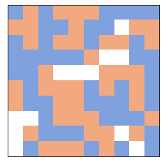
And here’s an animation for a bigger example:
grid = Schelling(n=100, p=0.3)
grid.animate(frames=30, interval=0.1)
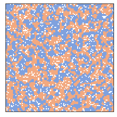
The degree of segregation increases quickly.
The following figure shows the process after 2 and 10 steps.
from utils import three_frame
grid = Schelling(n=100, p=0.3)
three_frame(grid, [0, 2, 8])
savefig('figs/chap09-1')
Saving figure to file figs/chap09-1
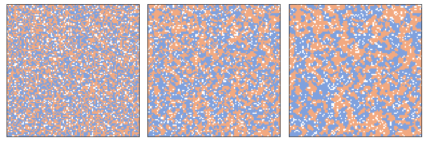
And here’s how segregation in steady state relates to p, the threshold on the fraction of similar neighbors.
from utils import set_palette
set_palette('Blues', 5, reverse=True)
np.random.seed(17)
for p in [0.5, 0.4, 0.3, 0.2]:
grid = Schelling(n=100, p=p)
segs = [grid.step() for i in range(12)]
plt.plot(segs, label='p = %.1f' % p)
print(p, segs[-1], segs[-1] - p)
decorate(xlabel='Time steps', ylabel='Segregation',
loc='lower right', ylim=[0, 1])
savefig('figs/chap09-2')
0.5 0.8707797990077598 0.3707797990077598
0.4 0.8181252110773387 0.4181252110773387
0.3 0.7538847395404771 0.4538847395404771
0.2 0.5729593164353953 0.3729593164353953
Saving figure to file figs/chap09-2
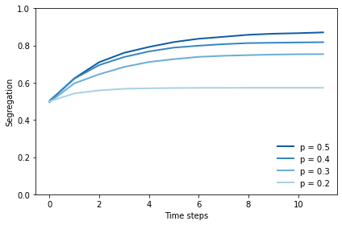
At p=0.3, there is a striking difference between the level that would make people happy, at only 30%, and the level they actually get, around 75%.
Exercise: Experiment with different starting conditions: for example, more or fewer empty cells, or unequal numbers of red and blue agents.
9.2. Sugarscape#
make_locs takes the dimensions of the grid and returns an array where each row is a coordinate in the grid.
def make_locs(n, m):
"""Makes array where each row is an index in an `n` by `m` grid.
n: int number of rows
m: int number of cols
returns: NumPy array
"""
t = [(i, j) for i in range(n) for j in range(m)]
return np.array(t)
make_locs(2, 3)
array([[0, 0],
[0, 1],
[0, 2],
[1, 0],
[1, 1],
[1, 2]])
make_visible_locs takes the range of an agents vision and returns an array where each row is the coordinate of a visible cell.
The cells are at increasing distances. The cells at each distance are shuffled.
def make_visible_locs(vision):
"""Computes the kernel of visible cells.
vision: int distance
"""
def make_array(d):
"""Generates visible cells with increasing distance."""
a = np.array([[-d, 0], [d, 0], [0, -d], [0, d]])
np.random.shuffle(a)
return a
arrays = [make_array(d) for d in range(1, vision+1)]
return np.vstack(arrays)
make_visible_locs(2)
array([[ 0, 1],
[ 1, 0],
[ 0, -1],
[-1, 0],
[ 0, -2],
[-2, 0],
[ 0, 2],
[ 2, 0]])
distances_from returns an array that contains the distance of each cell from the given coordinates.
def distances_from(n, i, j):
"""Computes an array of distances.
n: size of the array
i, j: coordinates to find distance from
returns: array of float
"""
X, Y = np.indices((n, n))
return np.hypot(X-i, Y-j)
dist = distances_from(5, 2, 2)
dist
array([[2.82842712, 2.23606798, 2. , 2.23606798, 2.82842712],
[2.23606798, 1.41421356, 1. , 1.41421356, 2.23606798],
[2. , 1. , 0. , 1. , 2. ],
[2.23606798, 1.41421356, 1. , 1.41421356, 2.23606798],
[2.82842712, 2.23606798, 2. , 2.23606798, 2.82842712]])
I use np.digitize to set the capacity in each cell according to the distance from the peak. Here’s an example that shows how it works.
bins = [3, 2, 1, 0]
np.digitize(dist, bins)
array([[1, 1, 1, 1, 1],
[1, 2, 2, 2, 1],
[1, 2, 3, 2, 1],
[1, 2, 2, 2, 1],
[1, 1, 1, 1, 1]])
Here’s my implementation of Sugarscape:
class Sugarscape(Cell2D):
"""Represents an Epstein-Axtell Sugarscape."""
def __init__(self, n, **params):
"""Initializes the attributes.
n: number of rows and columns
params: dictionary of parameters
"""
self.n = n
self.params = params
# track variables
self.agent_count_seq = []
# make the capacity array
self.capacity = self.make_capacity()
# initially all cells are at capacity
self.array = self.capacity.copy()
# make the agents
self.make_agents()
def make_capacity(self):
"""Makes the capacity array."""
# compute the distance of each cell from the peaks.
dist1 = distances_from(self.n, 15, 15)
dist2 = distances_from(self.n, 35, 35)
dist = np.minimum(dist1, dist2)
# cells in the capacity array are set according to dist from peak
bins = [21, 16, 11, 6]
a = np.digitize(dist, bins)
return a
def make_agents(self):
"""Makes the agents."""
# determine where the agents start and generate locations
n, m = self.params.get('starting_box', self.array.shape)
locs = make_locs(n, m)
np.random.shuffle(locs)
# make the agents
num_agents = self.params.get('num_agents', 400)
assert(num_agents <= len(locs))
self.agents = [Agent(locs[i], self.params)
for i in range(num_agents)]
# keep track of which cells are occupied
self.occupied = set(agent.loc for agent in self.agents)
def grow(self):
"""Adds sugar to all cells and caps them by capacity."""
grow_rate = self.params.get('grow_rate', 1)
self.array = np.minimum(self.array + grow_rate, self.capacity)
def look_and_move(self, center, vision):
"""Finds the visible cell with the most sugar.
center: tuple, coordinates of the center cell
vision: int, maximum visible distance
returns: tuple, coordinates of best cell
"""
# find all visible cells
locs = make_visible_locs(vision)
locs = (locs + center) % self.n
# convert rows of the array to tuples
locs = [tuple(loc) for loc in locs]
# select unoccupied cells
empty_locs = [loc for loc in locs if loc not in self.occupied]
# if all visible cells are occupied, stay put
if len(empty_locs) == 0:
return center
# look up the sugar level in each cell
t = [self.array[loc] for loc in empty_locs]
# find the best one and return it
# (in case of tie, argmax returns the first, which
# is the closest)
i = np.argmax(t)
return empty_locs[i]
def harvest(self, loc):
"""Removes and returns the sugar from `loc`.
loc: tuple coordinates
"""
sugar = self.array[loc]
self.array[loc] = 0
return sugar
def step(self):
"""Executes one time step."""
replace = self.params.get('replace', False)
# loop through the agents in random order
random_order = np.random.permutation(self.agents)
for agent in random_order:
# mark the current cell unoccupied
self.occupied.remove(agent.loc)
# execute one step
agent.step(self)
# if the agent is dead, remove from the list
if agent.is_starving() or agent.is_old():
self.agents.remove(agent)
if replace:
self.add_agent()
else:
# otherwise mark its cell occupied
self.occupied.add(agent.loc)
# update the time series
self.agent_count_seq.append(len(self.agents))
# grow back some sugar
self.grow()
return len(self.agents)
def add_agent(self):
"""Generates a new random agent.
returns: new Agent
"""
new_agent = Agent(self.random_loc(), self.params)
self.agents.append(new_agent)
self.occupied.add(new_agent.loc)
return new_agent
def random_loc(self):
"""Choose a random unoccupied cell.
returns: tuple coordinates
"""
while True:
loc = tuple(np.random.randint(self.n, size=2))
if loc not in self.occupied:
return loc
def draw(self):
"""Draws the cells."""
draw_array(self.array, cmap='YlOrRd', vmax=9, origin='lower')
# draw the agents
xs, ys = self.get_coords()
self.points = plt.plot(xs, ys, '.', color='red')[0]
def get_coords(self):
"""Gets the coordinates of the agents.
Transforms from (row, col) to (x, y).
returns: tuple of sequences, (xs, ys)
"""
agents = self.agents
rows, cols = np.transpose([agent.loc for agent in agents])
xs = cols + 0.5
ys = rows + 0.5
return xs, ys
Here’s my implementation of the agents.
class Agent:
def __init__(self, loc, params):
"""Creates a new agent at the given location.
loc: tuple coordinates
params: dictionary of parameters
"""
self.loc = tuple(loc)
self.age = 0
# extract the parameters
max_vision = params.get('max_vision', 6)
max_metabolism = params.get('max_metabolism', 4)
min_lifespan = params.get('min_lifespan', 10000)
max_lifespan = params.get('max_lifespan', 10000)
min_sugar = params.get('min_sugar', 5)
max_sugar = params.get('max_sugar', 25)
# choose attributes
self.vision = np.random.randint(1, max_vision+1)
self.metabolism = np.random.uniform(1, max_metabolism)
self.lifespan = np.random.uniform(min_lifespan, max_lifespan)
self.sugar = np.random.uniform(min_sugar, max_sugar)
def step(self, env):
"""Look around, move, and harvest.
env: Sugarscape
"""
self.loc = env.look_and_move(self.loc, self.vision)
self.sugar += env.harvest(self.loc) - self.metabolism
self.age += 1
def is_starving(self):
"""Checks if sugar has gone negative."""
return self.sugar < 0
def is_old(self):
"""Checks if lifespan is exceeded."""
return self.age > self.lifespan
Here’s an example with n=50, starting with 400 agents.
env = Sugarscape(50, num_agents=400)
env.draw()
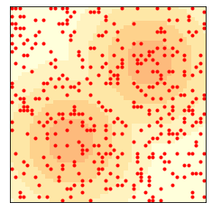
The distribution of vision is uniform from 1 to 6.
from empiricaldist import Cdf
cdf = Cdf.from_seq(agent.vision for agent in env.agents)
cdf.plot()
decorate(xlabel='Vision', ylabel='CDF')
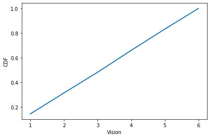
The distribution of metabolism is uniform from 1 to 4.
cdf = Cdf.from_seq(agent.metabolism for agent in env.agents)
cdf.plot()
decorate(xlabel='Metabolism', ylabel='CDF')
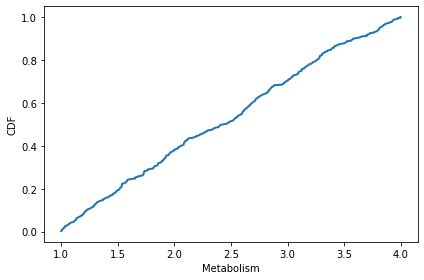
The distribution of initial endowment of sugar is uniform from 5 to 25.
cdf = Cdf.from_seq(agent.sugar for agent in env.agents)
cdf.plot()
decorate(xlabel='Sugar', ylabel='CDF')
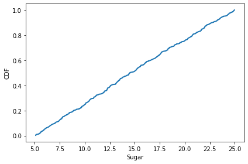
env.step()
env.draw()
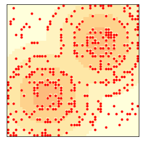
Here’s what the animation looks like.
env.animate(frames=50)
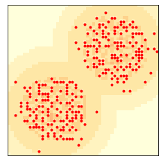
The number of agents levels off at the “carrying capacity”:
len(env.agents)
268
plt.plot(env.agent_count_seq)
decorate(xlabel='Time steps', ylabel='Number of Agents')
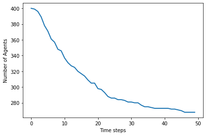
This figure shows the state of the system after 2 and 10 steps.
env = Sugarscape(50, num_agents=400)
three_frame(env, [0, 2, 98])
savefig('figs/chap09-3')
Saving figure to file figs/chap09-3
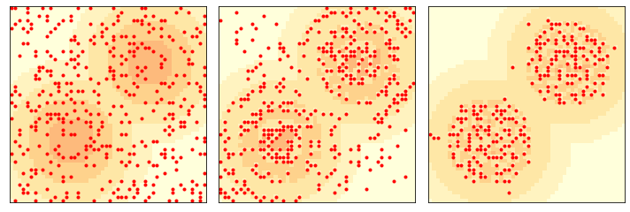
Exercise: Experiment with different numbers of agents. Try increasing or decreasing their vision or metabolism, and see what effect it has on carrying capacity.
9.3. Sugarscape with finite lifespans#
Now we start with 250 agents, with lifetimes from 60 to 100, and replacement.
env = Sugarscape(50,
num_agents=250,
min_lifespan=60,
max_lifespan=100,
replace=True)
env.animate(frames=100)
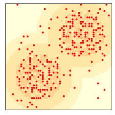
After 100 time steps, the distribution of wealth is skewed to the right. Most agents have very little sugar, but a few have a lot.
cdf = Cdf.from_seq(agent.sugar for agent in env.agents)
cdf.plot()
decorate(xlabel='Wealth', ylabel='CDF')
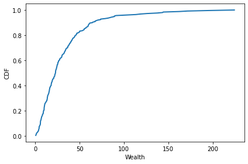
cdf.quantile([0.25, 0.50, 0.75, 0.90])
array([10.78996198, 22.86265585, 40.75981206, 64.52552842])
Starting with the same parameters, I’ll run the model 500 steps, recording the distribution of wealth after each 100 steps:
np.random.seed(17)
env = Sugarscape(50, num_agents=250,
min_lifespan=60, max_lifespan=100,
replace=True)
cdf = Cdf.from_seq(agent.sugar for agent in env.agents)
cdfs = [cdf]
for i in range(5):
env.loop(100)
cdf = Cdf.from_seq(agent.sugar for agent in env.agents)
cdfs.append(cdf)
After about 200 steps, the distribution is stationary (doesn’t change over time).
On a log scale, it is approximately normal, possibly with a truncated right tail.
plt.figure(figsize=(10, 6))
plt.subplot(1, 2, 1)
def plot_cdfs(cdfs, **options):
for cdf in cdfs:
cdf.plot(**options)
plot_cdfs(cdfs[:-1], color='gray', alpha=0.3)
plot_cdfs(cdfs[-1:], color='C0')
decorate(xlabel='Wealth', ylabel='CDF')
plt.subplot(1, 2, 2)
plot_cdfs(cdfs[:-1], color='gray', alpha=0.3)
plot_cdfs(cdfs[-1:], color='C0')
decorate(xlabel='Wealth', ylabel='CDF', xscale='log')
savefig('figs/chap09-4')
Saving figure to file figs/chap09-4
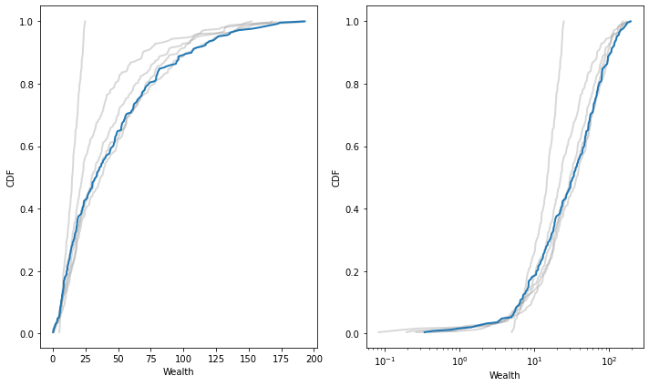
Exercise: Experiment with different starting conditions and agents with different vision, metabolism, and lifespan. What effect do these changes have on the distribution of wealth?
9.4. Migration in waves#
If we start with all agents in the lower left, they propagate up and to the right in waves.
np.random.seed(17)
env = Sugarscape(50,
num_agents=300,
starting_box=(20, 20),
max_vision=16)
env.animate(frames=20, interval=0.4)
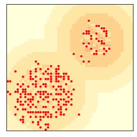
Here’s what it looks like after 6 and 12 steps.
env = Sugarscape(50, num_agents=300, starting_box=(20, 20), max_vision=16)
three_frame(env, [0, 6, 6])
savefig('figs/chap09-5')
Saving figure to file figs/chap09-5
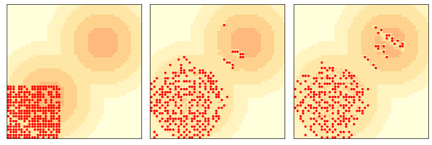
This example is interesting because the waves move diagonally, unlike the agents, who can only move up or to the right. They are similar in some ways to gliders and other Game of Life spaceships.
Exercise: Again, experiment with different starting conditions and see what effect they have on the wave behavior.
9.5. Exercises#
Exercise: Bill Bishop, author of The Big Sort, argues that American society is increasingly segregated by political opinion, as people choose to live among like-minded neighbors.
The mechanism Bishop hypothesizes is not that people, like the agents in Schelling’s model, are more likely to move if they are isolated, but that when they move for any reason, they are likely to choose a neighborhood with people like themselves.
Write a version of Schelling’s model to simulate this kind of behavior and see if it yields similar degrees of segregation.
There are several ways you can model Bishop’s hypothesis. In my
implementation, a random selection of agents moves during each step.
Each agent considers k randomly-chosen empty locations and
chooses the one with the highest fraction of similar neighbors.
How does the degree of segregation depend on k?
You should be able to implement this model by inheriting from
Schelling and overriding __init__ and step.
And a test of the step method
Exercise: In the first version of Sugarscape, we never add agents, so once the population falls, it never recovers. In the second version, we only replace agents when they die, so the population is constant. Now let’s see what happens if we add some “population pressure”.
Write a version of Sugarscape that adds a new agent at the end of every step. Add code to compute the average vision and the average metabolism of the agents at the end of each step. Run the model for a few hundred steps and plot the population over time, as well as the average vision and average metabolism.
You should be able to implement this model by inheriting from
Sugarscape and overriding __init__ and step.